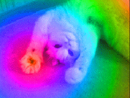
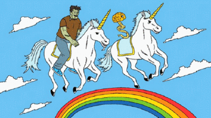

Categories
History
Albert Hofmann, a scientist who worked for Sandoz Pharmaceutical, made LSD for the first time in 1938. Its purpose was to act as a blood stimulant. Five years later, its hallucinogenic properties were discovered when Albert “accidentally” consumes some LSD. The proper proportions to have a good trip were then discovered to be 25 micrograms. The 60s were sure a wild time, in which the popularity of LSD grew exponentially. The drug was spread across the United States and the UK, where it is still very popular today. Mostly young adults often use it in dance clubs and raves.

Chemistry
Molecular Formula: C20H25N30Weight: 323.432 9/mol Lysergic Acid Diethylmide, or LSD for short, is an organic compound capable of forming hallucinogenic illusions and altering one’s moods and thinking. It is made up of the elements Carbon, Hydrogen, and Nitrogen. If you’re ever thinking of “breaking bad”, making LSD is the way to go! To go about doing this, you need to find some ergot fungus. Once you have it, carefully extract the ergot alkaloids. Be sure not to expose the alkaloids to bright lights, because that will make them break down. Then, you need to synthesize the alkaloids. Be careful, because many of the solvents and reactants for the alkaloids can in fact cause cancer or explosions, and that wouldn’t help you out of your pickle. Isomerize your product. Then, you need to add an acid and a base to crystalize your LSD. And remember; don’t get high off your own supply!
Effects
Everyone has a different trip. The effects of LSD are primarily visual. Depending on the amount of intake and your own mind, you may hallucinate or simply experience things that are already there in a whole new way. Its visual effects include hallucinations and saturated and brighter colors. Emotionally, it makes users feel dreamlike and euphoric. When high on LSD, you have poor judgement due to your lack of sanity. So be careful! For example: don’t walk out the window, because there is definitely not a floor on the other side, no matter what you see. And no. You can’t fly. LSD stresses the serotonin receptors in your brain, using up a bunch of your happy hormones at once, causing its effects.
Hazards
Because LSD impairs judgement, it often causes people to make stupid decisions, like jumping off a bridge because they think they can fly. This can cause life-threatening injuries. The short-term effects of LSD aren’t pretty. Dizziness, sweating, high blood pressure, high body temperature, tremors and rapid emotional shifts are all effects one may have after taking a tablet of acid. After using LSD, you remember what you went through. If you had a good trip, it can make you feel more creative and insightful for weeks. If it was a bad trip, it may leave you feeling traumatized for the same amount of time. LSD makes you feel happy because it releases so many serotonin hormones in your brain. However, after you have come down from your high, you may feel a loss of energy or feel depressed. It can take weeks to regain healthy serotonin levels again.
